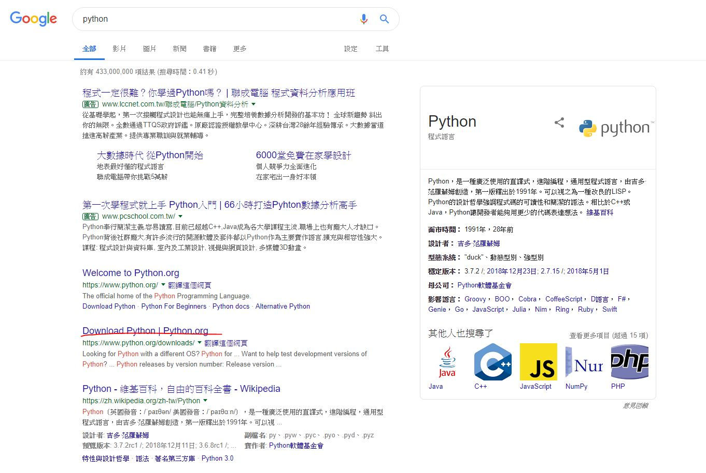
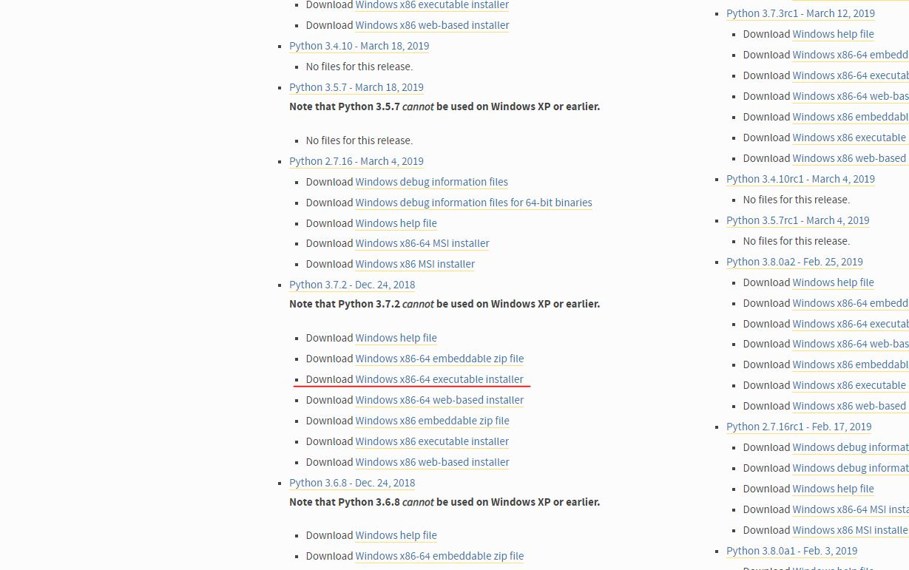
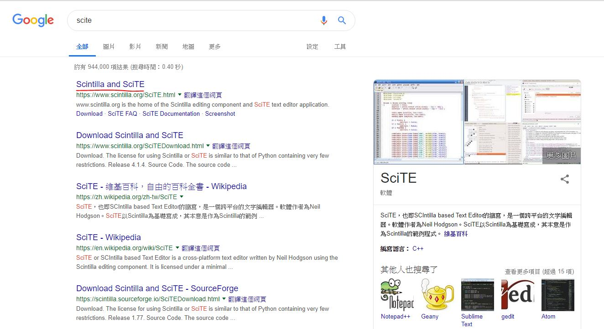
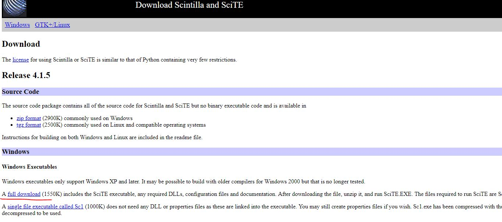
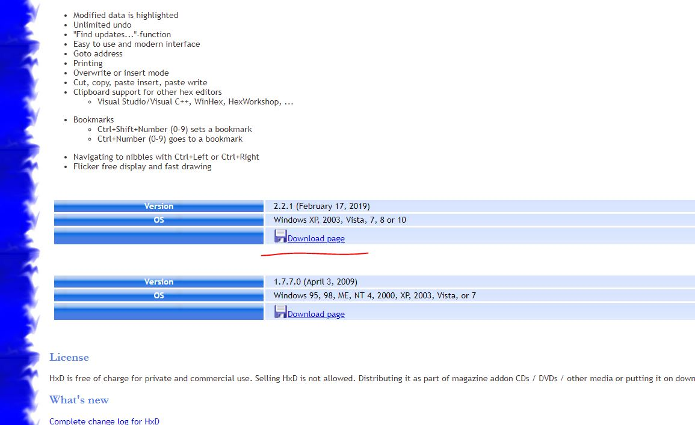
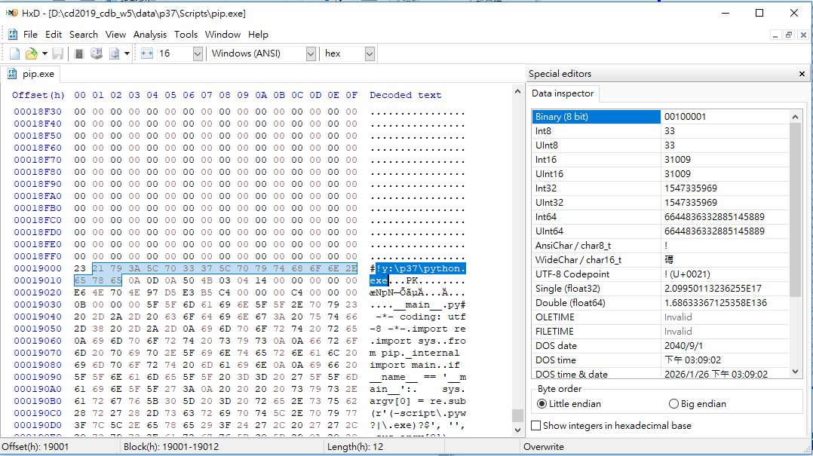
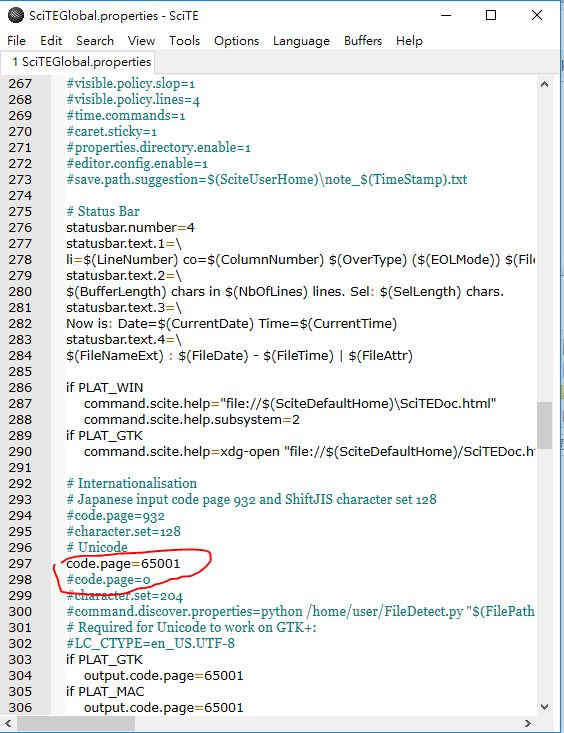
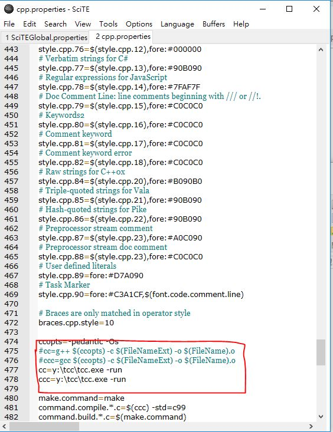
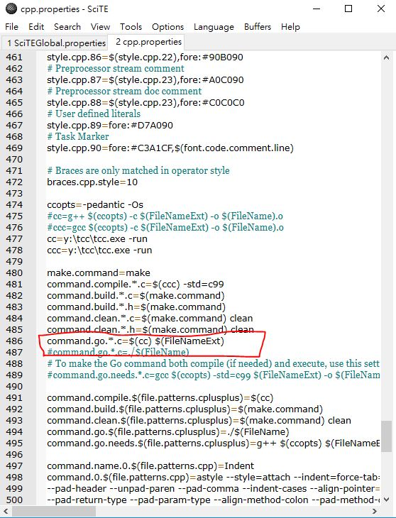
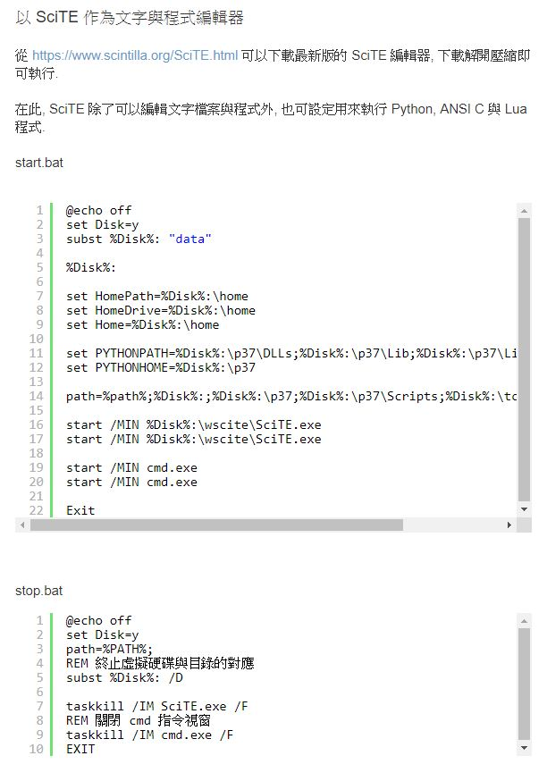

2019.03.15
40423207-4
本週上課說明了如何編輯 git credential 設定，以及利用 config 設定因應 Github 多帳號下的 ssh 連線，並利用 ssh 與 private key 對 Github 倉儲提交推送。將 https://github.com/mdecourse/cmstest clone 後，內容複製到分組網站。
40423160-4
這週主要是透過SSH做為可以不用再打帳號密碼，更新github的時候就透過金鑰，可以直接將隨身碟跟github座連接，不過在建立步驟中就遇到許多問題了，就一直重複觀看老師上傳的影片，許多指令也很不熟悉，剛好網路也遇到問題，老師就再教了IPV6跟IPV4的使用方法跟連接ssh的方法。
40423131-4
建立可攜系統:
1.將Python、Scite、HxD、Kdiff3和TinyC都下載好，解壓縮。





......等等軟體。
2.安裝
(1)python安裝
在Optional Features介面 ，勾選2 3 5。並選擇要安裝的位置。
(2)打開HxD，對P37->Scripts裡的pip檔做更改，先用搜尋找C:，之後修改成y:\p37\python

3.打開Scite，打開SciTEGlobal.properties 之後搜尋code，修改298行和299行

4.在資料夾中搜尋cpp，修改475行和476行，新增cc=y:\tcc\tcc.exe -run 和ccc=y:\tcc\tcc.exe -run這兩行

5.在資料夾中搜尋python，修改152行和160行

6.在scite中建立兩個新的檔案，其中一個存為start.bat，另一個存為stop.bat

40623207-4
本週上課說明了如何編輯 git credential 設定，以及利用 config 設定因應 Github 多帳號下的 ssh 連線，並利用 ssh 與 private key 對 Github 倉儲提交推送。將 https://github.com/mdecourse/cmstest clone 後，內容複製到分組網站。
40623218-4
這裡辦分組名單確認出來了，並要討論如何做出手足球和進行v-rep模擬，進入github協同。
40623219-4
在經過老師的分組後，我們開始分配工作，而我的工作室負責v-rep的模擬，而其他分配到網頁維護的開始學習建立網站。
40623231-4
在2下這個學期也是和上學期一樣一起協同倉儲，
但是組員是用程式亂數抽籤分配，並開始分工，
從擅長的事選擇起。
1.將Python、Scite、HxD、Kdiff3、TinyC下載下來，然後再將每個進行解壓縮。


選擇下載位置


40623237-4
於第四周為了手足球的專題而分了組，而我被分到此組，也就是第三組。負責的部分為手足球v-rep之模擬。也於課堂中更新了可攜系統(cd2019_cdb_w4)最新版本，並存至個人隨身碟中。
40623241-4
心得 : 這學期開始也是要協同，目標為完成手足球，並且用vrep模擬，希望可以再多學一些東西，第三組的各位加油!!
40623246-4
經過分組後，已經確定組員，那也必須盡快決定分工，開始把網站架設後，討論如何做出手足球並用V-rep進行模擬。從零開始的架設網頁，讓大家都有點手忙腳亂，而且在建立倉儲的時候還出了點trouble，但是還好最後總算是有出來了。
Experience-1 << Previous Next >> 2019.03.22